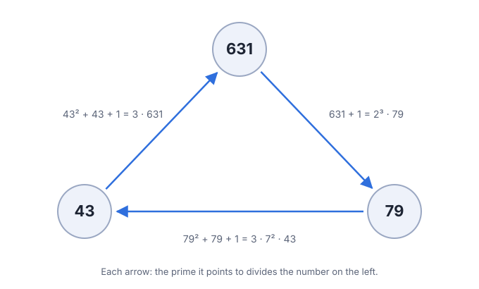
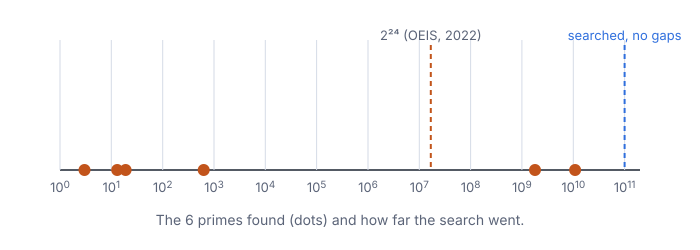

Explained from scratch · OEIS A354427
Primes that come back
Start at a prime, take three steps that only use adding and dividing, and see whether you land where you started. Every prime up to 100,000,000,000 was checked. Exactly 6 of them come back.
1The question, with numbers
Take the prime 631 and do three things.
631 + 1 = 632 = 2 · 2 · 2 · 79 → keep the prime 79 79·79 + 79 + 1 = 6321 = 3 · 7 · 7 · 43 → keep the prime 43 43·43 + 43 + 1 = 1893 = 3 · 631 → and 631 is back.We went 631 → 79 → 43 → 631 and returned to where we started. Now try the prime 7: 7 + 1 = 8 = 2·2·2, so we must keep 2; then 2·2 + 2 + 1 = 7, keep 7; then 7·7 + 7 + 1 = 57 = 3 · 19. There is no 7 in 57. The prime 7 does not come back.
The question is simply: which primes come back? Tomohiro Yamada asked it in 2022, found 3, 13, 19 and 631, checked that there are no others below 16,777,216, and noted two much bigger ones. What nobody knew is whether there were others hiding in between.
2Five words
- prime
- a whole number bigger than 1 that only 1 and itself divide: 2, 3, 5, 7, 11, 13, …, 631.
- divides
- “79 divides 632” means 632 ÷ 79 has no remainder: 632 = 8 · 79.
- step
- from a prime p you may step to any prime that divides p + 1 (first step) or that divides x·x + x + 1 (second and third steps).
- witness
- the two primes visited on the way back. For 631 the witness is (79, 43). Anyone can check a witness with a calculator.
- remainder
- what is left after dividing: 1893 leaves remainder 0 when divided by 631, and 57 leaves remainder 1 when divided by 7.
3The recipe
For a prime p: (1) write p + 1 as a product of primes and choose one of them, q. (2) Compute q·q + q + 1, write it as a product of primes and choose one, r. (3) Compute r·r + r + 1 and ask whether p divides it. If some choice of q and r works, p is on the list.

4Try one yourself
Does the prime 19 come back? You only need to add, multiply and divide by small numbers.
Show the answer
19 + 1 = 20 = 2 · 2 · 5. Choose q = 2: 2·2 + 2 + 1 = 7, so r = 7. Then 7·7 + 7 + 1 = 57 = 3 · 19. Yes: 19 → 2 → 7 → 19, and 19 is on the list.
5Where the information comes from
From a computer program that applies the recipe to every prime up to 100,000,000,000 — about four billion primes — and to nothing else. Nobody chose which primes to look at, and nobody gave an opinion: the program either finds a witness or it does not.
The hard part is step (2): q·q + q + 1 can have twenty digits, and breaking such numbers into primes billions of times is slow. The program avoids it with a shortcut that is proved in the repository. If the prime r we are looking for is bigger than p, then the other factor of q·q + q + 1 is smaller than p, and the rules of remainders say exactly what it must be. So instead of breaking a big number apart, the program only has to test one division.

6What was found
Up to 100,000,000,000 exactly 6 primes come back: 3, 13, 19, 631, 1,794,067,711 and 10,855,016,833.
The last two were already known to come back. What is new is that there is nothing in between: between 631 and 1,794,067,711, between that and 10,855,016,833, and from there up to one hundred billion, no other prime makes the round trip. That is what lets 1,794,067,711 and 10,855,016,833 be written down as the fifth and sixth members of the list, and it pushes the search from 16,777,216 to one hundred billion.

7How we know it is not wrong
It finds what was already known. Run from zero, the program gives back exactly Yamada's 3, 13, 19 and 631, and nothing else below 16,777,216 — his published bound. It also finds his two big primes, with the very witnesses he gave. A check that reproduces known answers is called a positive control: if the program missed something it should find, we would know.
Three different programs agree. One follows the recipe literally, breaking every number into primes. Another breaks q·q + q + 1 apart by a completely different method and walks the other way round. The third uses the shortcut. They share nothing but the question, and they give the same round trips, one by one, wherever they overlap.
Every answer is re-checked with exact arithmetic. The fast program only proposes; each witness is then verified with whole numbers, which anyone can repeat.
8What it is good for
These primes come from an old puzzle by Jean-Marie De Koninck: for which numbers n is the sum of the divisors of n equal to the square of the product of its distinct primes? Only 1 and 1782 are known. Yamada proved that a certain kind of solution would need a prime from this list, or from a similar one with four steps. So knowing the list exactly up to a bound tells anyone searching for solutions where they cannot be. It does not solve the puzzle.
9What it does not say
It does not say whether the list goes on forever or stops. It does not say anything above one hundred billion. It does not solve De Koninck's puzzle, and it does not touch the four-step list (OEIS A355298), which needs much harder factoring. And it does not discover the fifth and sixth primes — Yamada did — it shows that there are no others before them.
Glossary
| word | meaning | example |
|---|---|---|
| prime | divisible only by 1 and itself | 631 |
| divides | leaves no remainder | 631 divides 1893 |
| witness | the primes visited on the way back | (79, 43) for 631 |
| positive control | a check that must find something already known | finding 3, 13, 19, 631 |
| remainder | what is left after dividing | 57 ÷ 7 leaves 1 |
Further reading
Level 1 — without formulas
OEIS A354427, the entry for this list, with Yamada's comments. Divisor function on Wikipedia, for the sum of divisors.
Level 2 — a textbook
G. H. Hardy and E. M. Wright, An Introduction to the Theory of Numbers, chapter XVI (the arithmetical functions, including the sum of divisors). K. Ireland and M. Rosen, A Classical Introduction to Modern Number Theory, chapter 9, for the cube roots of unity modulo a prime that the shortcut uses.
Level 3 — the work this one is measured against
T. Yamada, On a problem of De Koninck, Moscow J. Combinatorics and Number Theory 10 (2021) 249–260, doi:10.2140/moscow.2021.10.249 — where these primes come from. K. A. Broughan, J.-M. De Koninck, I. Kátai and F. Luca, On integers for which the sum of divisors is the square of the squarefree core, J. Integer Sequences 15 (2012), 12.7.5. L. A. Brown's program for the sister sequence A354426, which he took to 108.